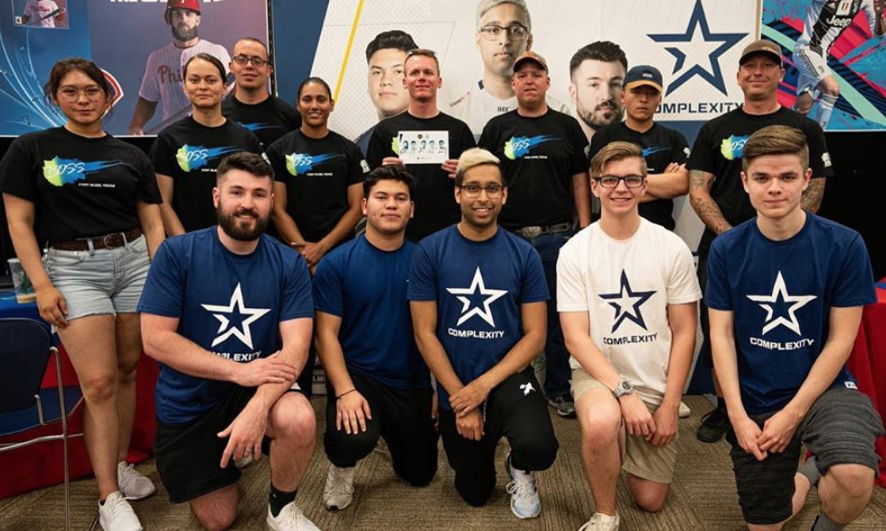

Complexity Gaming es una organización de deportes electrónicos de renombre mundial con una rica historia y una sólida presencia en la escena competitiva. Fundada en 2003, Complexity ha evolucionado para convertirse en una de las principales organizaciones de deportes electrónicos en América del Norte y más allá. en una de las principales organizaciones de deportes electrónicos en América del Norte y más allá. en una de las principales organizaciones de deportes electrónicos en América del Norte y más allá. en una de las principales organizaciones de deportes electrónicos en América del Norte y más allá. en una de las principales organizaciones de deportes electrónicos en América del Norte y más allá.
